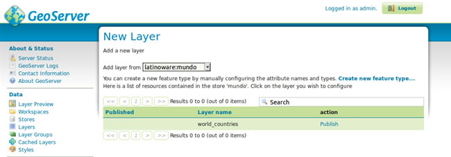
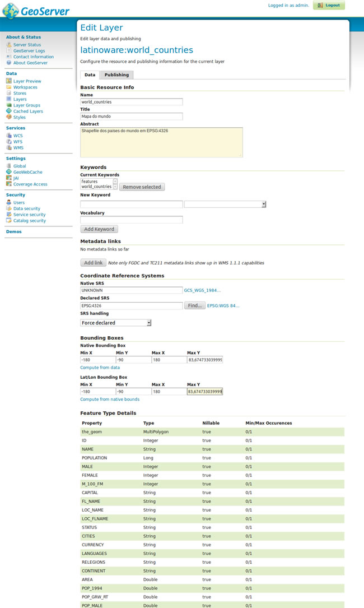
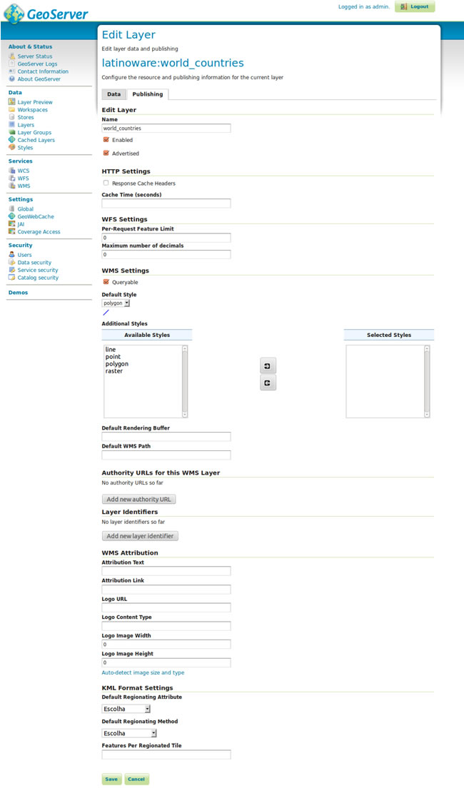
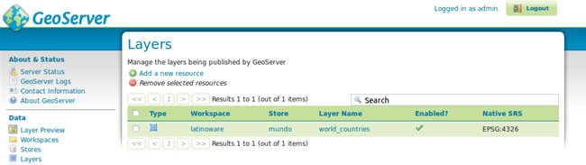
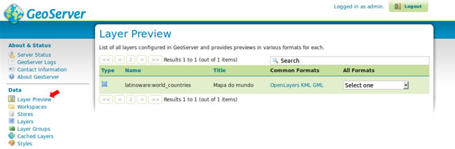
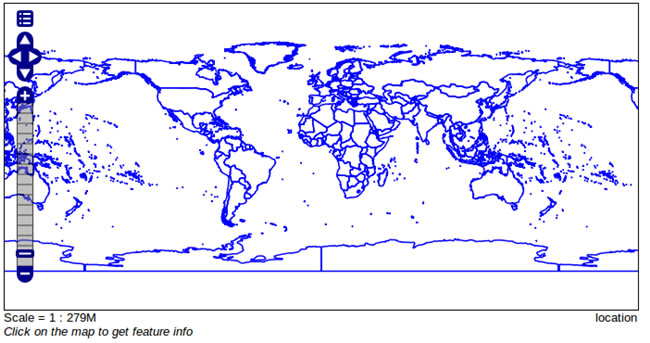

Vamos selecionar a nossa store cadastrada do tipo shapefile e clicar em Publish
Aba de dados
Aba de publicação
Listagem de camadas
Vamos clicar no menu lateral em Layer Preview
Listagem de camadas disponíveis
Visualização da camada no Openlayers